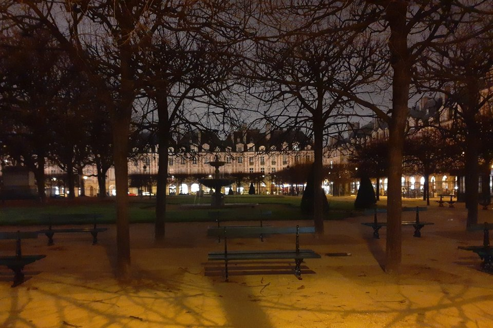

France · Paris
Le Marais audio guide
9 stops · 10 min · offline · plays as you arrive
The guide price is €2.99. This button is a placeholder. It does not open checkout and does not take payment. Email hello@getearwise.com.
A 9-stop offline audio guide to Le Marais in Paris, recorded in 10 languages and designed to play as you arrive. It covers a walking route through noble squares, hidden hôtels particuliers, and the historic Jewish quarter. Download once; you will not need a signal on the ground.
Stops
- 1
The Hôtel de Ville
This part of the route looks at The Hôtel de Ville.
Free sample: stop 1
Play0:00 / –:––Read along
The Hôtel de Ville, the grand Renaissance-style palace in front of you, has been the seat of the Paris city government since 1357.
That year Étienne Marcel, the leader of the city's merchants, bought a house on this square for the town council. Under Francis I it was replaced by a palace designed by the Italian architect Domenico da Cortona, known as Boccador, begun in 1533 and finished in 1628. The square was then the Place de Grève, a sandy riverbank where public executions were held and where men looking for work gathered; the French word grève, meaning a strike as well as a sandy shore, is often traced to it.
In May 1871, in the last days of the Paris Commune, the Communards set fire to the building, and its library and the city's old registers of births, marriages and deaths were lost. It was rebuilt with its façade copied from the old one but with electricity, telephones and lifts inside. On the twenty-fifth of August 1944, General de Gaulle spoke here, hailing Paris liberated.
The building also stood at the centre of the Revolution. On the fourteenth of July 1789 the last provost of the merchants, Jacques de Flesselles, was killed by the crowd here, and in July 1794 Robespierre was arrested inside after a failed attempt on his own life. After the fire of 1871, a competition chose the architects Théodore Ballu and Édouard Deperthes, who raised the new building between 1874 and 1882. The main façade runs a hundred and forty-three metres, and the bell tower behind the clock is fifty metres high. Its niches are filled with statues of famous Parisians, among them Auguste Rodin's mathematician d'Alembert. On the south side, by the garden, stands a statue of Étienne Marcel himself.
- 2
The Church of Saint-Paul-Saint-Louis
The next story is about The Church of Saint-Paul-Saint-Louis.
Script and audio included when you buy - 3
The Hôtel de Sully
Here the guide turns to The Hôtel de Sully.
Script and audio included when you buy - 4
The Place des Vosges
A short story at this point covers The Place des Vosges.
Script and audio included when you buy - 5
Victor Hugo's House
This stop is given to Victor Hugo's House.
Script and audio included when you buy - 6
The Musée Carnavalet
Stand here for the story of The Musée Carnavalet.
Script and audio included when you buy - 7
The Musée Picasso
The narration at this pin is about The Musée Picasso.
Script and audio included when you buy - 8
The Hôtel de Soubise
From this spot the guide talks through The Hôtel de Soubise.
Script and audio included when you buy - 9
The Rue des Rosiers
You hear about The Rue des Rosiers at this stage of the visit.
Script and audio included when you buy
On the map
All 9 stop pins for this guide are marked. Open map